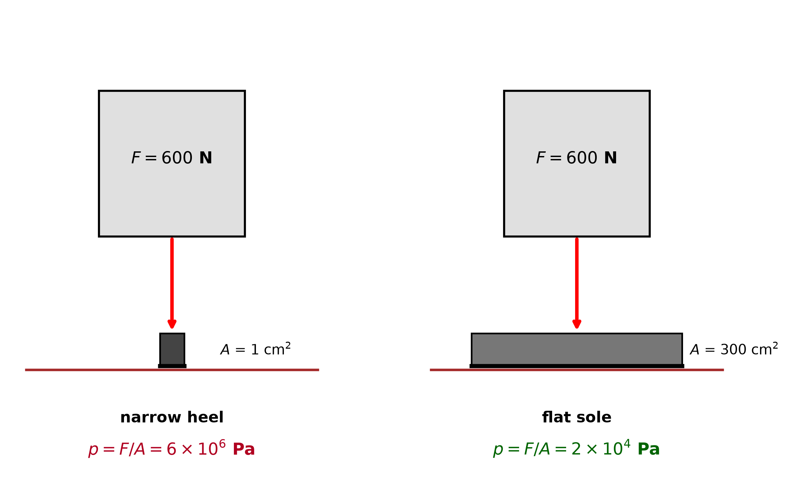
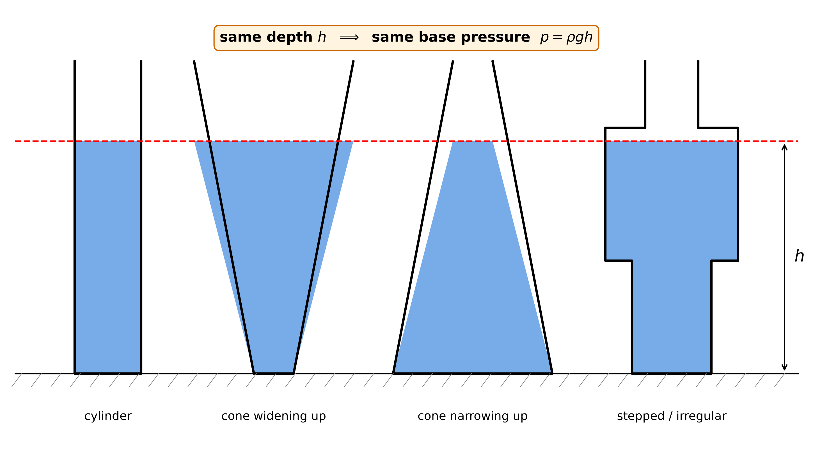
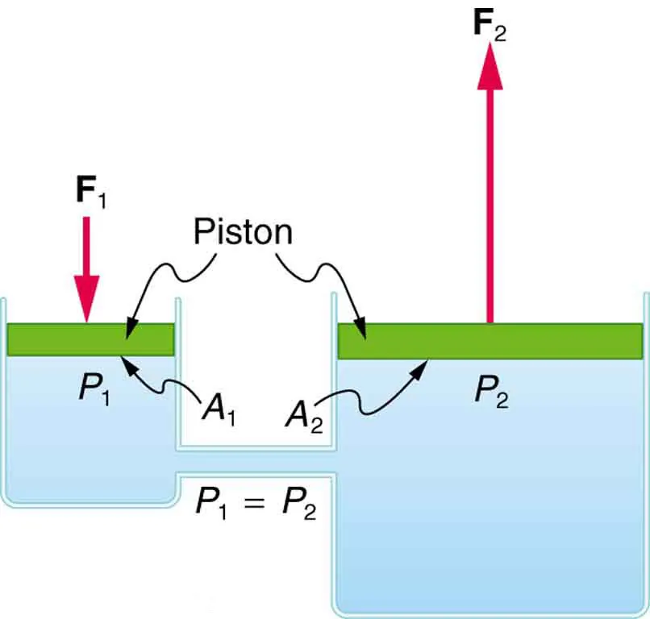
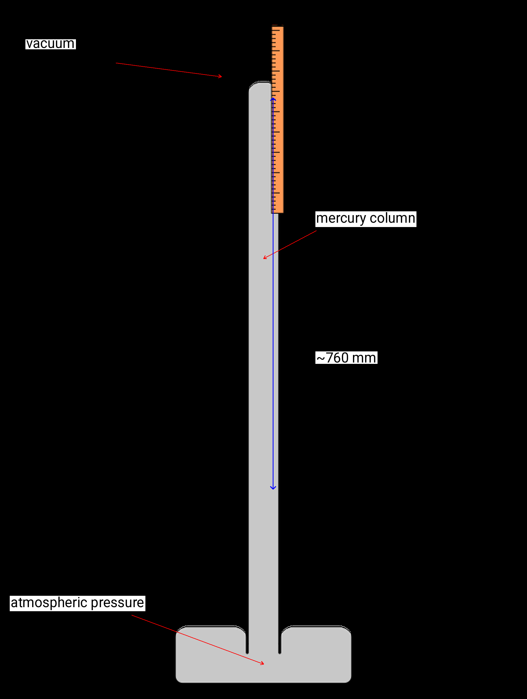
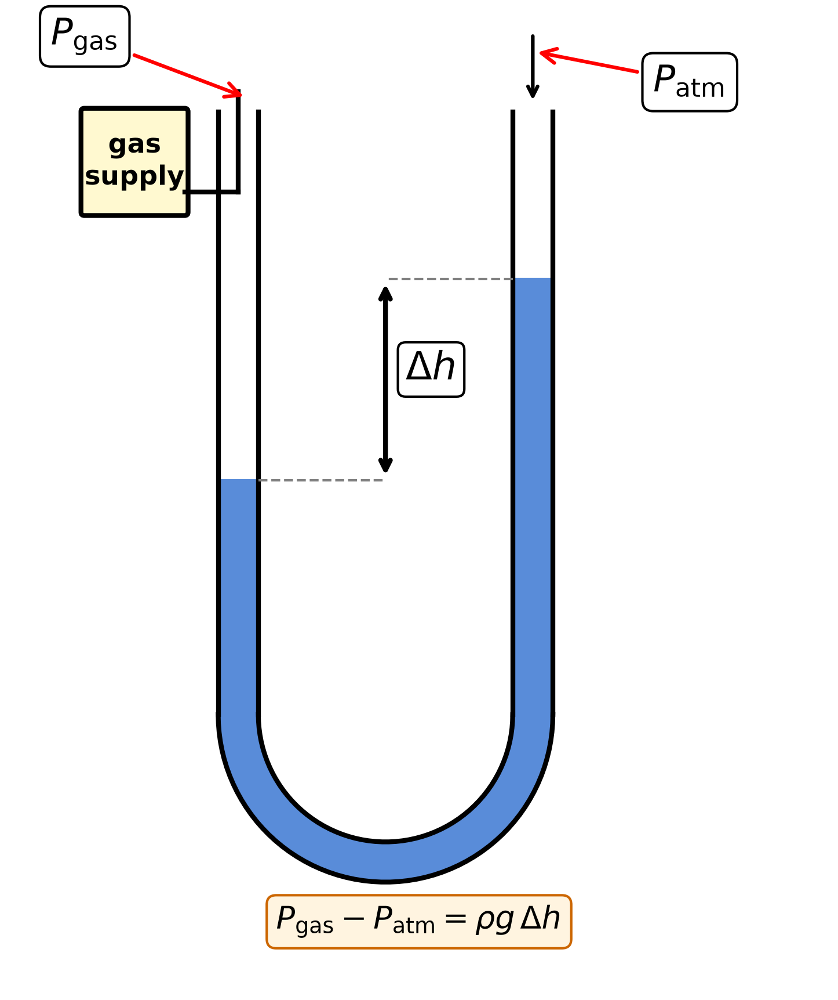

Lesson 4 — Pressure in Fluids
What is pressure?
Pressure is the force per unit area
acting at right angles to a surface.
\[\boxed{\;p =
\dfrac{F}{A}\;}\]
- p — pressure, unit pascal (Pa) = 1 N
m⁻²
- F — force (N), perpendicular to the surface
- A — area of contact (m²)
Pressure in everyday life

- Narrow heel → small A → large
pressure.
- Flat sole → large A → small
pressure.
- Sharp knives, pins, nails — small A → cut and pierce easily.
- Tractor tyres, snowshoes — large A → do not sink.
Pressure in a liquid column
A column of liquid of depth h, density
ρ:
\[\boxed{\;p = \rho\, g\, h \qquad \Delta
p = \rho\, g\, \Delta h\;}\]
Pressure in a liquid depends only on:
- depth \(h\)
- density \(\rho\)
- g (gravitational field strength)
It does not depend on the shape of
the container.
The hydrostatic paradox

Four vessels of different shapes but equal liquid depth — the
pressure at the base is the same in every vessel.
Absolute vs gauge pressure
Gauge pressure (the extra pressure above
atmospheric):
\[p_\text{gauge} = \rho g h\]
Absolute pressure (total pressure at that
depth):
\[p_\text{abs} = p_\text{atm} + \rho g
h\]
Atmospheric pressure at sea level:
\[p_\text{atm} \approx 1.01 \times 10^{5}\
\text{Pa}\]
Pascal’s principle
Pressure applied to an enclosed fluid is transmitted equally
and undiminished to every part of the fluid and the walls of the
container.
The hydraulic press

Pressure is the same in all parts of the connected fluid:
\[\dfrac{F_1}{A_1} = \dfrac{F_2}{A_2}
\qquad \Rightarrow \qquad F_2 = F_1 \cdot \dfrac{A_2}{A_1}\]
A small force on a small piston → a large force on a big piston.
Force gain = area ratio. The input stroke is
longer than the output stroke — energy is
conserved.
The mercury barometer

- The atmosphere presses on a dish of mercury.
- Mercury rises in an inverted tube to about 760
mm.
- Convert to pascals:
\[p_\text{atm} = \rho_\text{Hg}\, g\, h =
13\,600 \times 9.8 \times 0.760\]
\[\boxed{\;p_\text{atm} \approx 1.01
\times 10^{5}\ \text{Pa}\;}\]
The U-tube manometer

- One side open to the atmosphere, the other connected to the gas
supply.
- Height difference Δh between the two liquid
surfaces gives the gauge pressure:
\[\boxed{\;p_\text{gas} - p_\text{atm} =
\rho g \Delta h\;}\]
Watch out
- Pressure depends on depth, not the width or shape
of the container.
- Convert area to m²: 1 cm² = 10⁻⁴ m².
- If the question asks for total pressure under
water, add \(p_\text{atm}\).
- Pascal’s principle transmits pressure, not force.
The bigger output force comes from a bigger piston area, not from “free”
energy.
Worked example 1
A dam holds water to a depth of 15 m. \(\rho_\text{water} = 1000\ \text{kg
m}^{-3}\), \(g = 10\ \text{N
kg}^{-1}\). Find the pressure at the bottom.
Working.
\[p = \rho g h = 1000 \times 10 \times
15\]
\[\boxed{\;p = 1.5 \times 10^{5}\
\text{Pa}\;}\]
Worked example 2
A hydraulic press has input piston area \(A_1 = 2.0\ \text{cm}^{2}\) and output
piston area \(A_2 = 50\
\text{cm}^{2}\). If the input force is \(F_1 = 20\ \text{N}\), find the output force
\(F_2\).
Working.
\[F_2 = F_1 \cdot \dfrac{A_2}{A_1} = 20
\times \dfrac{50}{2.0}\]
\[\boxed{\;F_2 = 500\
\text{N}\;}\]
Class task
Copy each question into your exercise book and answer there.
- A 600 N boy stands upright.
- Both shoe soles have a total area of 300 cm². Find the pressure on
the floor.
- Standing on one toe of area 5.0 cm². Find the pressure. (Give both
answers in Pa.)
- In the equation \(\Delta p = \rho g \Delta
h\), what does \(\rho\)
represent? A pressure due to the liquid
B density of the liquid C total
pressure due to the liquid and air D density of an
object placed in the liquid
- Four tanks contain water to depths 10 cm, 9 cm, 8 cm and 7 cm. In
which tank is the pressure at the base the greatest?
- A hydraulic press has input piston area \(A_1 = 2.0\ \text{cm}^2\) and output piston
area \(A_2 = 50\ \text{cm}^2\). For
input force \(F_1 = 20\ \text{N}\),
find \(F_2\).
Homework
Bring written answers to the next lesson.
- An object underwater breaks if the total pressure exceeds 2.1 MPa.
Taking \(p_\text{atm} = 1.01 \times 10^{5}\
\text{Pa}\) and \(\rho_\text{water} =
1000\ \text{kg m}^{-3}\), find the maximum safe depth.
- Two immiscible liquids are poured into a cylinder with the denser
liquid at the bottom. Sketch the graph of pressure vs depth from the top
of the upper liquid to the bottom of the lower liquid, labelling the
change in slope at the interface.
- State Pascal’s principle and give one application that illustrates
it.
- A mercury barometer at sea level reads 750 mm. Taking \(\rho_\text{Hg} = 13\,600\ \text{kg
m}^{-3}\) and \(g = 10\ \text{N
kg}^{-1}\), calculate the atmospheric pressure in Pa.
- A simple barometer reads 76 cm of mercury. If a small quantity of
air leaks into the vacuum space above the mercury, state and explain
what will happen to the reading.